피아노조율기능사 (2009-07-12 기출문제)
1과목: 임의 구분
1. 피아노의 내부를 성능적인 면에서 구조적 부분, 음과 직접 연관된 부분, 기계적 부분 등 3가지로 분류할 때 다음 중 음과 직접 연관된 부분이라고 할 수 없는 것은?
- 향판
- 현
- 해머
- 철골
(정답률: 알수없음)

2. 다음 중 댐퍼레버를 직접 움직이게 하는 것은?
- 댐퍼로드
- 링크레버
- 페달스프링
- 댐퍼페달레버
(정답률: 알수없음)
3. 서스펜딩 브리지(suspending bridge)에 대하여 가장 옳게 설명한 것은?
- 향판과의 접착점을 향판 중심부에 접근시키는 방법으로 저음부 브리지에 적용한다.
- 히치핀과 장브리지 사이에 보조브리지를 넣어서 배음의 효과를 얻기 위한 것이다.
- 콘서트 그랜드 피아노에서 장브리지와 단브리지가 서로 연결되어 있는 것이다.
- 업라이트 피아노 중고음부의 철골 힘살대 부근에 브리지를 파 주는 것이다.
(정답률: 알수없음)
4. 피아노의 발달 과정에 대한 설명으로 연도가 가장 늦은 것은?
- 브로드우드가 즘페와 같이 피아노 제작 개시
- 브로드우드 페달 완성
- 스타인웨이 업라이트 피아노 제작
- 에라르 아그라프 발명
(정답률: 알수없음)
5. 다음은 피아노의 품질에 대한 내용이다. ( )안에 알맞은 수치는?
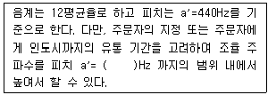
- 445
- 446
- 447
- 448
(정답률: 알수없음)
6. 피아노에 사용하는 재료 중 목재의 함수율은 어느 정도가 적당한가?
- 8~9%
- 20~30%
- 50~60%
- 70~80%
(정답률: 알수없음)
7. 다음 중 현이 갖추어야 할 조건으로 가장 거리가 먼 것은?
- 항장력이 강하고 순도가 높을 것
- 불순물이 없는 고순도의 탄소강일 것
- 흠이 없고 균질일 것
- 녹 방지를 위해 표면에 도금이 되어 있을 것
(정답률: 알수없음)
8. 다음 피아노 부품 중 단풍나무로 제작하지 않는 것은?
- 브리지
- 향봉
- 핀판
- 해머우드
(정답률: 알수없음)
9. 피아노선 규격 중 15번선의 인장강도(N/mm2)는 얼마인가?
- 2390~2590
- 2380~2570
- 2370~2550
- 2360~2540
(정답률: 알수없음)
10. 피아노선 규격 중 20번선의 지름은 몇 mm 인가?
- 1.⑤0+0.013
- 1.075+0.013
- 1.100+0.013
- 1.125+0.013
(정답률: 알수없음)
11. 인간이 어떤 소리를 들었을 때 느껴지는 강약은 음압과 소리의 주파수에 따라 달라지는데, 이 때 같은 크기로 느껴지는 순음을 주파수에 따라 나타낸 곡선을 무엇이라 하는가?
- 등읍압곡선
- 라우드니스곡선
- 청감보정 감쇠곡선
- 순음곡선
(정답률: 알수없음)
12. 건반 E44가 329.628Hz일 때 F45는 몇 Hz인가?
- 311.127
- 329.628
- 349.228
- 369.994
(정답률: 알수없음)
13. 다음 중 진동수에 대한 설명으로 틀린 것은?
- 일반적으로 진동수가 적어지면 소리는 낮아진다.
- 진동수가 15000Hz 정도가 되면 소리로서 듣기 어렵다.
- 진동수가 20000Hz 이상은 초음파에 해당된다.
- 사람이 말을 할 때의 목소리는 진동수가 5000Hz 이상의 음파이다.
(정답률: 알수없음)
14. 음의 성분의 차이로 생기는 감각적인 특성을 무엇이라고 하는가?
- 음률
- 음색
- 하모니
- 순음
(정답률: 알수없음)
15. 다음 중 온음 4개와 반음 1개로 구성되어 있는 음정은?
- 장6도
- 단6도
- 완전4도
- 증4도
(정답률: 알수없음)
16. 다음 중 공진주파수를 구하는 식으로 옳은 것은? (단, 막대의 길이를 L, 재료의 Young율을 Y, 밀도를 ρ0, 장력을 T, 정수를 n이라 한다.)
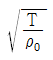
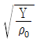
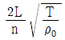
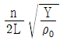
(정답률: 알수없음)
17. 장7도와 단7도에는 반음이 각각 몇 개씩 포함되어 있는가?
- 장7도:1개, 단7도:1개
- 장7도:1개, 단7도:2개
- 장7도:2개, 단7도:1개
- 장7도:2개, 단7도:2개
(정답률: 알수없음)
18. 음파에 대한 설명으로 옳지 않은 것은?
- 음파는 공기나 액체, 고체에도 전달된다.
- 일반적으로 온도와 밀도가 일정할 때에는 음의 크기에 관계없이 음의 속도는 변하지 않는다.
- 기체일 경우 음의 속도는 기체 밀도의 평방근에 비례한다.
- 공기의 ‘소밀파’도 음파라고 할 수 있다.
(정답률: 알수없음)
19. 소리의 파장이 60cm일 경우 주파수는 약 몇 Hz인가? (단, 음속은 340m/s이다.)
- 5.67
- 566.7
- 2040
- 20400
(정답률: 알수없음)
20. 순정율에서 완전5도는 대전음, 소전음, 반음이 각각 몇 개로 구성되어 있는가?
- 대전음 1개, 소전음 2개, 반음 1개
- 대전음 2개, 소전음 1개, 반음 1개
- 대전음 1개, 소전음 1개, 반음 2개
- 대전음 2개, 소전음 2개, 반음 1개
(정답률: 알수없음)
2과목: 임의 구분
21. 피아노에 사용하는 현(동선)의 장력을 구하는 식으로 옳은 것은? (단, 현의 길이를 L, 현의 지름을 D, 현의 진동수를 F라 한다.)
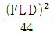
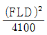
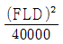
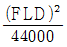
(정답률: 알수없음)
22. 평균율 5도는 몇 센트인가?
- 498
- 500
- 700
- 702
(정답률: 알수없음)
23. 해머가 많이 마모되어 정음하고자 할 때 다음 중 가장 먼저 해야 할 작업은?
- 다림질
- 침질
- 해머화일링
- 경화제주입
(정답률: 알수없음)
24. 피아노 배음의 함유도에 가장 크게 영향을 끼치는 것은?
- 현의 길이
- 타현점
- 해머의 크기
- 타현거리
(정답률: 알수없음)
25. 4도음을 위로 잡을 때 완전4도와 평균율 4도의 음정 차이는?
- 완전4도가 3센트 높다.
- 완전4도가 1.5센트 낮다.
- 완전4도가 1.5센트 높다.
- 완전4도가 2센트 낮다.
(정답률: 알수없음)
26. 단7도 검사가 가장 많이 사용되는 음역은?
- 최고음부
- 차고음부에서 최고음부까지
- 최저음부
- 중음부에서 최저음부까지
(정답률: 알수없음)
27. F33-C40의 완전5도에 있어서 맥놀이(beat)가 협음정 0.59라고 할 때, C40-F45의 완전4도에 있어서 맥놀이(beat)는 얼마인가?
- 협음정 0.59
- 광음정 0.59
- 협음정 1.18
- 광음정 1.18
(정답률: 알수없음)
28. 다음 중 어울림 음정에 속하지 않는 것은?
- 완전4도
- 장3도
- 장2도
- 단6도
(정답률: 알수없음)
29. 음원에서 소리의 발생이 중지된 뒤에도 소리가 남아있는 현상을 무엇이라고 하는가?
- 음의 양이효과
- 음의 반사
- 음의 흡수
- 음의 잔향
(정답률: 알수없음)
30. 조율곡선에서 A1과 C88의 음은 실제 평균율에 의한 진동수에 비해 어느 정도의 차이가 있는가?
- A1:+35cent, C88:-20cent
- A1:+35cent, C88:-20cent
- A1:-20cent, C88:-30cent
- A1:-20cent, C88:+30cent
(정답률: 알수없음)
31. 피타고라스 음률의 장2도 계산하는 방법으로 옳은 것은?
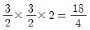
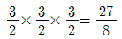
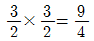
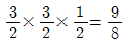
(정답률: 알수없음)
32. 16자연배음렬에서 3배음과 5배음 사이의 음정은 무엇인가?
- 증6도
- 감6도
- 장6도
- 단6도
(정답률: 알수없음)
33. 순정률은 장음과 단음의 서로 다른 2가지 폭을 지닌 온음이 존재하는데, 이 온음들 간의 차이는 약 22cents이다. 이러한 차이를 무엇이라 하는가?
- 피타고라스 콤마
- 중간음률
- 신토닉 콤마
- 순정율 콤마
(정답률: 알수없음)
34. 피타고라스 음률에서 장6도의 음정비로 옳은 것은?
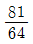
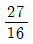
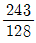
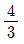
(정답률: 알수없음)
35. 유스타키오관(Eustachian tube)은 주로 어떤 역할을 하는가?
- 소리의 높낮이를 구분하는 역할을 한다.
- 중이의 공기압과 외부의 기압을 조절하는 역할을 한다.
- 고막의 진동을 바깥 공기의 진동보다 10배 이상 증폭시키는 역할을 한다.
- 고막의 장력을 고르게 해 주는 역할을 한다.
(정답률: 알수없음)
36. 건반고르기 작업에 대한 설명으로 옳은 것은?
- 건반 고르기는 밸런스레일 펀칭클로스 위에 종이 펀칭을 고여 작업한다.
- 종이 펀칭을 고일 때에는 두꺼운 것이 위로 올라가야 한다.
- 종이 펀칭이 고여져 있어도 건반이 높을 때는 건반목을 깎아서 낮게 한다.
- 백레일 클로스 위에 이물질을 제거한 후 건반 고르기를 한다.
(정답률: 알수없음)
37. 백건과 흑건 사이의 조정은 무엇으로 하는가?
- 부싱클로스
- 캡스턴
- 후론트핀
- 펀칭
(정답률: 알수없음)
38. 다음 중 소프트페달의 조정방법으로 가장 적절한 것은?
- 해머 레일을 페달봉이 약간 밀고 있게 한다.
- 해머 레일과 페달봉이 로스트모션이 없어야 한다.
- 페달봉과 해머 레일 사이가 약 1mm정도의 간격이 있어야 한다.
- 페달봉과 해머 레일 사잉가 약 5mm정도의 간격이 있어야 한다.
(정답률: 알수없음)
39. 일반적으로 댐퍼페달을 밟았다 놓을 때 ‘탁탁’하는 소리가 난다면 어디를 먼저 확인하는 것이 좋은가?
- 페달로드
- 페달레버
- 페달스프링
- 토대목의 페달 주위 클로스 및 펠트류
(정답률: 알수없음)
40. 타현거리 조정에 대한 설명으로 옳은 것은?
- 타현거리는 28~38mm가 표준이다.
- 타현거리는 액션볼트의 길이를 변경하여도 변하지 않는다.
- 타현거리는 해머레일의 전후를 조정하더라도 변하지 않는다.
- 타현거리를 재는 방법은 현의 타현점 중앙과 해머 헤드의 타현점 중앙을 잰다.
(정답률: 알수없음)
3과목: 임의 구분
41. 해머의 타현거리를 55mm로 맞추고, 깊이를 10mm로 하였을 때의 결과로 옳은 것은?
- 해머의 운동량이 모자라기 때문에 2중 터치가 생긴다.
- 타현거리가 멀수록 강한 타현이 되어 소리를 크게 하기 위하여 좋다.
- 애프터 터치의 양이 많아진다.
- 레규레이팅을 조정하기가 쉬워진다.
(정답률: 알수없음)
42. 댐퍼스푼을 매끈하게 하는데 필요한 조치사항이 아닌 것은?
- 뜨거운 물로 닦아낸다.
- 스틸울(철면)로 닦아낸다.
- 부드러운 가죽을 붙인다.
- 실리콘을 칠한다.
(정답률: 알수없음)
43. 렛 오프 스크류(Let off screw)를 조정하는 주된 목적은?
- 해머 스톱 조정
- 해머 접근거리 조정
- 해머 사진행 조정
- 해머의 운동원활성 조정
(정답률: 알수없음)
44. 건반을 치고 놓을 때 받드 펠트(butt felt) 부위에서 잡음이 발생하였다. 그 주된 원인으로 옳은 것은?
- 받드 스킨이 나쁘다.
- 잭 머리 부분이 나쁘다.
- 받드 펠트가 너무 단단하다.
- 받드 스킨과 받드 펠트가 직접 접착되어 있다.
(정답률: 알수없음)
45. 딤퍼스푼의 조정 작업으로 가장 적합한 방법은?
- 건반을 눌렀을 때 바로 동작해야 한다.
- 해머가 현에 닿았을 때 바로 동작해야 한다.
- 해머가 타현거리의 1/3정도 진행하였을 때 동작해야 한다.
- 해머가 타현거리의 3/4정도 진행하였을 때 동작해야 한다.
(정답률: 알수없음)
46. 해머 니들링(needling)에 관한 사항으로 옳은 것은?
- 신품인 경우에는 많은 횟수(200~500회 정도)를 찌르면 안 된다.
- 많이 사용하는 해머는 니들링이 필요없다.
- 바늘이 길고, 1개인 피커는 대부분 깊숙이 찌르는데 필요하다.
- 니들링 후에는 파일링 작업이 필요없다.
(정답률: 알수없음)
47. 해머 받드의 각종 접착부분에 관한 작업방법으로 옳은 것은?
- 쿠숀 펠트가 떨어졌을 때는 먼저 것보다 조금 두꺼운 것을 붙인다.
- 받드 스킨 접착시에는 본드를 전체적으로 칠한 후 접착 한다.
- 캐쳐 스킨이 떨어졌을 때는 양쪽 끝에만 접착제를 칠해 붙인다.
- 캐쳐 스킨을 교환할 때 거스러미가 눕는 방향을 위로 해서 붙인다.
(정답률: 알수없음)
48. 마모된 백첵 펠트를 수리할 때 가장 옳은 방법은?
- 마모되지 않는 곳을 페이퍼로 깎아 두께를 동일하게 해 준다.
- 부착되어 있는 펠트와 동일한 두께의 펠트를 교체하여 붙여준다.
- 받드 캐처 한쪽 면에 가죽을 붙여준다.
- 백첵의 높이를 낮추어 준다.
(정답률: 알수없음)
49. 건반 후론트 부싱을 교환할 때 가장 적합한 방법은?
- 낡은 클로스는 그대로 두고 그 위에 부싱을 접착해야 좋다.
- 접착 후 끼워두는 치구는 후론트 핀보다 1mm 정도 굵은 것이 좋다.
- 접착 후 끼워두는 치구는 후론트 핀보다 2mm 정도 가는 것이 좋다.
- 부싱의 길이는 가로 9mm, 세로 10mm 정도가 적당하다.
(정답률: 알수없음)
50. 벅첵의 역할에 대한 설명으로 틀린 것은?
- 해머 스톱거리를 돕는다.
- 해머의 리바운딩을 없애 준다.
- 캐처를 잡아준다.
- 음을 크게 증폭한다.
(정답률: 알수없음)
51. 댑퍼 페달의 주된 역할에 대하여 옳게 나타낸 것은?
- 음을 제거하는 역할을 한다.
- 음을 강하게 하는 역할을 한다.
- 음을 지속하게 하는 역할을 한다.
- 음을 약하게 하는 역할을 한다.
(정답률: 알수없음)
52. 다음 중 건반에서 발생하는 잡음이라 볼 수 없는 것은?
- 캡스턴 버튼과 위펜 휠과의 마찰
- 밸런스 핀과 건반 부싱과의 마찰
- 건반 몸체의 미세한 쪼개짐
- 받드 펠트가 떨어짐
(정답률: 알수없음)
53. 현의 진동을 전달받아 판 전체의 넓은 면에 큰 음을 증폭시키는 역할을 하는 것은?
- 돌림목
- 브리지
- 향판
- 향봉
(정답률: 알수없음)
54. 건반의 측면에 거친 면이 생겨 건반을 움직일 때마다 ‘사악사악’하는 잡음이 날 때 가장 적절한 제거 방법은?
- 밸런스 핀을 옮겨 건반과 건반의 간격을 넓게 해 준다.
- 후론트 핀의 간격을 잡아준다.
- 대패나 페이퍼로 건반 측면의 거친 부분을 매끈하게 다듬어 준다.
- 건반의 높이를 수정해 준다.
(정답률: 알수없음)
55. 업라이트 피아노에서 열쇠봉(key slip)에서 백건반 상단까지의 높이는?
- 16mm
- 18mm
- 20mm
- 22mm
(정답률: 알수없음)
56. 흑건 조정시 백건 표면에서 흑건 앞 끝 제일 높은 부분까지의 거리는?
- 8mm
- 10mm
- 12mm
- 15mm
(정답률: 알수없음)
57. 다음 공구 중 액션 조정용 공구가 아닌 것은?
- 키핀드라이버(key pin driver)
- 캡스터드라이버(capstan driver)
- 와이어플라이어(wire plier)
- 스페이서(spacer)
(정답률: 알수없음)
58. 다음 중 갈라진 음향판의 수리 방법으로 가장 적절한 것은?
- 점도가 높은 접착제를 밀어 넣은 다음 주위를 깨끗이 닦는다.
- 튼튼한 테이프를 발라 놓는다.
- 스르프스 목재를 쐐기형으로 깎아 접착제를 묻혀 단단하게 밀어 넣어 붙인다.
- 소나무 톱밥을 접착제로 잘 개어서 갈라진 사이에 꽉 차게 밀어 넣는다.
(정답률: 알수없음)
59. 댐퍼 페달을 밟아을 때 댐퍼와 현과의 거리가 서로 다를 경우 무엇을 조정하는가?
- 댐퍼와이어 조정
- 백첵 조정
- 댐퍼 페달 나비너트 조정
- 댐퍼 스푼 조정
(정답률: 알수없음)
60. 다음 중 건반 부분에서 발생하는 잡음의 원인에 해당하는 것은?
- 부싱 클로스가 마모 또는 경화되었을 때
- 부싱이 너무 빡빡할 때
- 납이 너무 가벼울 때
- 부싱 클로스가 너무 두꺼울 때
(정답률: 알수없음)